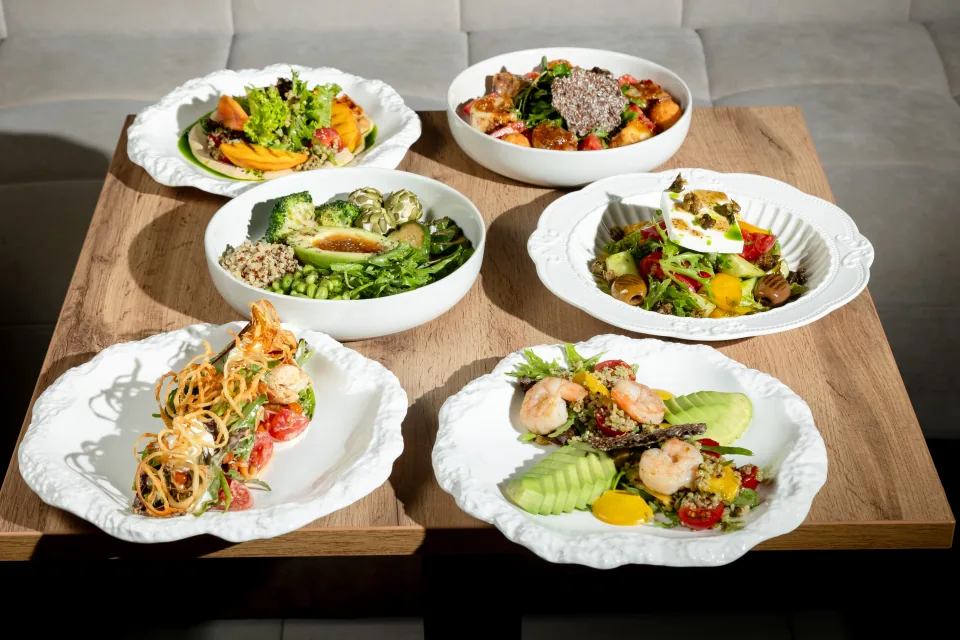
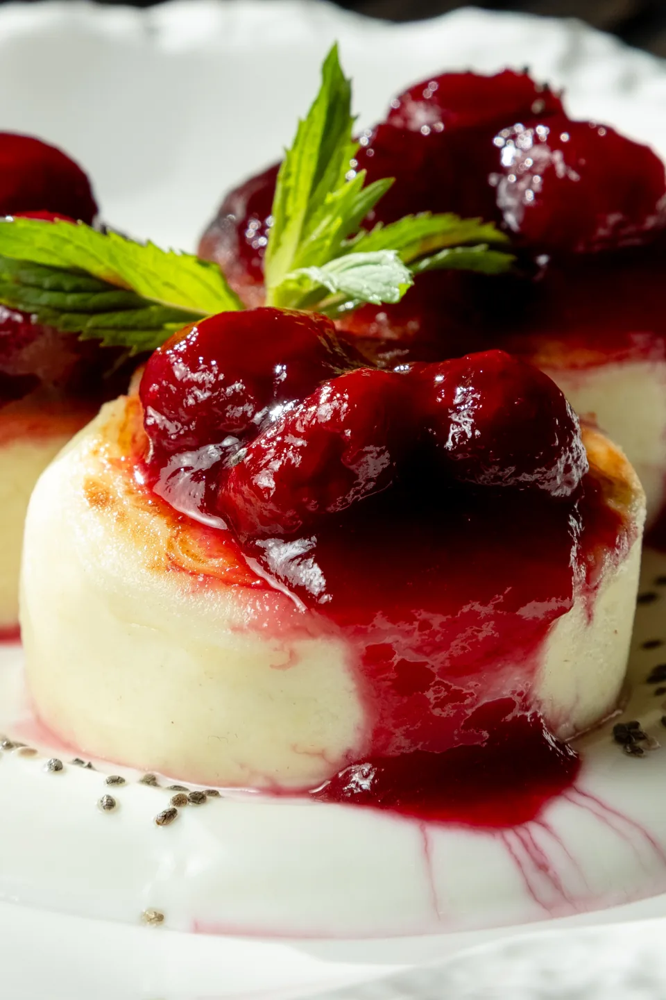

Утро можно
не торопить.
Каша на основе сулугуни и кукурузной муки с допами из хумуса, свежих овощей, ореховый соус, турецкой лепёшкой и яйцами в смятку.
Посмотреть в менюКофе, еда
и время для себя.
Кофе, еда и маленькие паузыв Прохладном.

От завтрака до сладкой паузы.
Выбирайте своё.
Каша на основе сулугуни и кукурузной муки с допами из хумуса, свежих овощей, ореховый соус, турецкой лепёшкой и яйцами в смятку.
Посмотреть в меню
Стейк сёмги в миндальных хлопьях в сливочно-устричном соусе, с кускусом и вялеными томатами на кабачке.
Посмотреть в менюТигровые креветки, микс салатов, помидоры черри, спелый манго, авокадо и киноа в соусе тархун с подачей соуса шрипс.
Посмотреть в менюСырники собственного производства, с греческим йогуртом и вишнёвым конфи.
Посмотреть в меню
Иногда лучший план — отложить дела, выбрать что-нибудь вкусное и просто побыть здесь.
Истории «Корицы» в Instagram*
Четыре адреса в Прохладном.
Выбирайте, куда удобнее зайти.
Маршруты откроются в Яндекс Картах.